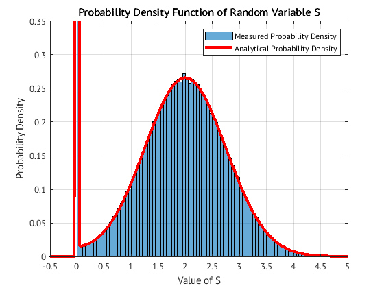

S22 CMPE320 Proj 2 Skeleton
close all;
clear;
PrA = 0.5;
Ntrials = 500000;
A_minusA = (rand(1,Ntrials)<=PrA);
A_minusA = 2*(A_minusA-0.5);
Avalue = 2;
sigma2 = 9/16;
N = sqrt(sigma2)*randn(1,Ntrials);
R = Avalue*A_minusA+N;
tenSigma = sqrt(sigma2)*10;
dr=0.05;
rEdge=[-tenSigma-Avalue:dr:tenSigma+Avalue];
figure(1)
x = [1:Ntrials];
y = R;
plot(x,y,'b.');
title(['Scatterplot of R Values in ', num2str(Ntrials)]);
ylabel('Voltage Value of R');
xlabel('Ntrials');
grid on;
legend('Trial');
figure(2)
spdfR = histogram(R, 'BinEdges', rEdge, 'Normalization', 'pdf');
[Vr,Nbinr,r]=unpackHistogram(spdfR);
edges = rEdge;
rGivenA = exp(-(edges-Avalue).^2/(2*sigma2))/sqrt(2*pi*sigma2);
rGivenNegA = exp(-(edges-(-Avalue)).^2/(2*sigma2))/sqrt(2*pi*sigma2);
fRr = rGivenA * 0.5 + rGivenNegA * 0.5;
hold on;
plot(edges, fRr, 'r', 'LineWidth', 3);
hold off;
xlabel('Voltage');
ylabel('Probability Density');
grid on;
legend('Random Variable R', 'Theoretical Value of R');
title('Probability Density of R');
figure(3);
S = (R>=0).*R;
x = [1:Ntrials];
y = S;
plot(R, S, 'b.');
xlabel('Random Variable R');
ylabel('Random Output Variable S');
grid on;
legend('Output Voltage');
title('Voltage Output from Perfect Diode Detector');
ds = dr;
figure(4);
sEdge = rEdge;
spdfS = histogram(S, 'BinEdges', sEdge, 'Normalization', 'pdf');
[Values,Ns,s]=unpackHistogram(spdfS);
i0 = min(find(s>=0));
fSs = fRr;
PrS_is_0 = sum(Vr(1:(length(Vr)/2 + 1)));
fSs(i0)=PrS_is_0;
fSs(1:i0-1) = 0;
hold on
plot(sEdge,fSs,'r','LineWidth',3);
hold off
grid on;
xlabel('Value of S');
ylabel('Probability Density');
title('Probability Density Function of Random Variable S')
legend('Measured Probability Density', 'Analytical Probability Density');
xlim([-0.5 5]);
ylim([0 .35]);
meanS = mean(S);
varS = var(S);
meanR = mean(R);
varR=var(R);
disp('--------');
disp('Section 2.1');
disp(['For the input, with A = +/-',num2str(Avalue),' variance ',num2str(sigma2),' and ',int2str(Ntrials),' trials,']);
disp(['the mean of R is ',num2str(meanR),' with variance ',num2str(varR),' = ',num2str(Avalue^2),' + ',num2str(sigma2)]);
disp(['For Method 1 (ideal diode), the mean of S is ',num2str(meanS),' and the variance is ',num2str(varS)])
disp(['For Method 1 (ideal diode), diode(',num2str(meanR),') = ',num2str(meanR*(meanR>=0))]);
S2 = abs(R);
figure(6);
x = [1:Ntrials];
y = S2;
plot(R, S2, 'b.');
xlabel('Random Variable R');
ylabel('Random Output Variable S');
grid on;
legend('Output Voltage');
title('Voltage Output from Absolute Value Detector');
figure(7);
s2Edge = sEdge;
spdfS2 = histogram(S2, 'BinEdges', s2Edge, 'Normalization', 'pdf');
[Values2,Ns2,s2]=unpackHistogram(spdfS2);
constantVal2 = 1 / (sqrt(2 * pi * sigma2));
negAval = exp(-(s2Edge - Avalue) .^ 2 / (2 * sigma2));
posAval = exp(-(s2Edge + Avalue) .^ 2 / (2 * sigma2));
fS2s = constantVal2 .* (negAval + posAval);
PRis0 = 2 * fRr(191);
fS2s(191) = 2 * PRis0;
fS2s(1:191) = 0;
hold on
plot(s2Edge, fS2s, 'r', 'LineWidth', 3);
hold off
grid on;
xlabel('Value of S');
ylabel('Probability Density');
title('Probabilty Density Function of S given an Absolute Value Detector');
legend('Measured Probability Density', 'Analytical Probability Density');
meanS2 = mean(S2);
varS2 = var(S2);
disp('--------');
disp('Section 2.2');
disp(['For the input, with A = +/-',num2str(Avalue),' variance ',num2str(sigma2),' and ',int2str(Ntrials),' trials,']);
disp(['the mean of R is ',num2str(meanR),' with variance ',num2str(varR),' = ',num2str(Avalue^2),' + ',num2str(sigma2)]);
disp(['For Method 2 (absolute value detector), the mean of S is ',num2str(meanS2),' and the variance is ',num2str(varS2)]);
disp(['For Method 2 (absolute value detector), diode(',num2str(meanR),') = ',num2str(meanR*(meanR>=0))]);
figure(9);
S3 = R.^2;
x = [1:Ntrials];
y = S3;
plot(R, S3, 'b.');
xlabel('Random Variable R');
ylabel('Random Output Variable S');
grid on;
legend('Output Voltage');
title('Voltage Output from Square Law Detector');
s3Edge = [0:ds:30];
figure(10);
spdfS3 = histogram(S3, 'BinEdges', s3Edge, 'Normalization', 'pdf');
[Values3,Ns3,s3]=unpackHistogram(spdfS3);
s3Edge(1) = 0.001;
constantVal = 1 ./ (2 * sqrt(s3Edge * 2 * pi * sigma2));
negAval = exp(-(sqrt(s3Edge) - Avalue) .^ 2 / (2 * sigma2));
posAval = exp(-(sqrt(s3Edge) + Avalue) .^ 2 / (2 * sigma2));
fS3s = (negAval + posAval) .* constantVal;
hold on;
plot(s3Edge, fS3s, 'r', 'LineWidth', 3);
hold off;
ylim([0 0.15]);
xlim([0 30]);
grid on;
xlabel('Value of S');
ylabel('Probability Density');
title('Probabilty Density Function of S given a Square Law Detector');
legend('Measured Probability Density', 'Analytical Probability Density');
meanS3 = mean(S3);
varS3 = var(S3);
disp('--------');
disp('Section 2.3');
disp(['For the input, with A = +/-',num2str(Avalue),' variance ',num2str(sigma2),' and ',int2str(Ntrials),' trials,']);
disp(['the mean of R is ',num2str(meanR),' with variance ',num2str(varR),' = ',num2str(Avalue^2),' + ',num2str(sigma2)]);
disp(['For Method 3 (squeare law detector), the mean of S is ',num2str(meanS3),' and the variance is ',num2str(varS3)]);
disp(['For Method 3 (square law detector), diode(',num2str(meanR),') = ',num2str(meanR*(meanR>=0))]);
disp('Output Table');
method = [1:3]';
ES = [meanS,meanS2,meanS3]';
gER = [meanR*(meanR>=0), abs(meanR), meanR^2]';
table = [method ES gER];
disp(table);
--------
Section 2.1
For the input, with A = +/-2 variance 0.5625 and 500000 trials,
the mean of R is -0.003123 with variance 4.5636 = 4 + 0.5625
For Method 1 (ideal diode), the mean of S is 0.99941 and the variance is 1.2797
For Method 1 (ideal diode), diode(-0.003123) = 0
--------
Section 2.2
For the input, with A = +/-2 variance 0.5625 and 500000 trials,
the mean of R is -0.003123 with variance 4.5636 = 4 + 0.5625
For Method 2 (absolute value detector), the mean of S is 2.0019 and the variance is 0.5558
For Method 2 (absolute value detector), diode(-0.003123) = 0
--------
Section 2.3
For the input, with A = +/-2 variance 0.5625 and 500000 trials,
the mean of R is -0.003123 with variance 4.5636 = 4 + 0.5625
For Method 3 (squeare law detector), the mean of S is 4.5636 and the variance is 9.6509
For Method 3 (square law detector), diode(-0.003123) = 0
Output Table
1.0000 0.9994 0
2.0000 2.0019 0.0031
3.0000 4.5636 0.0000
